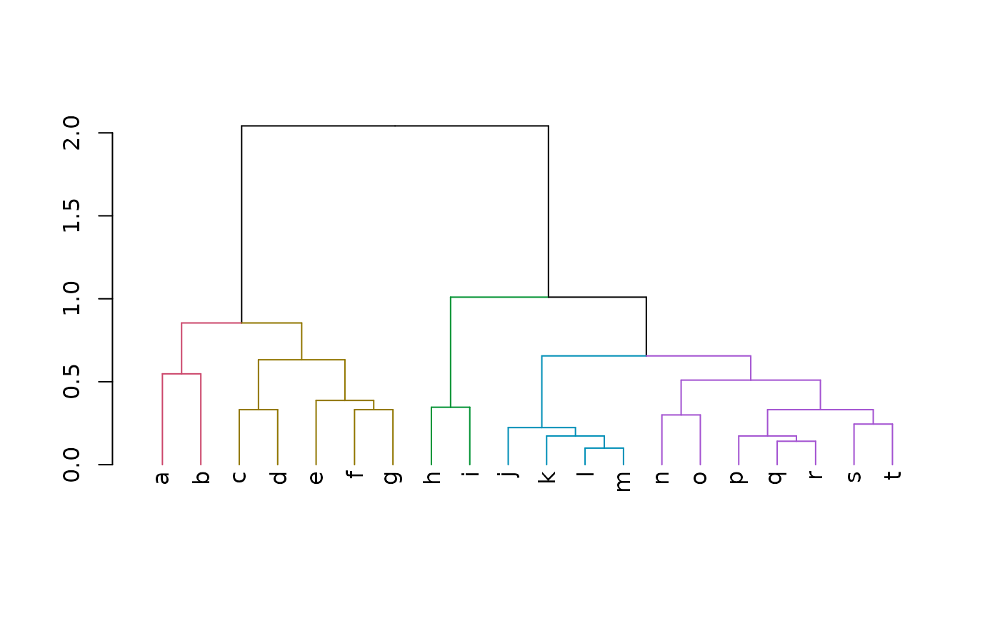
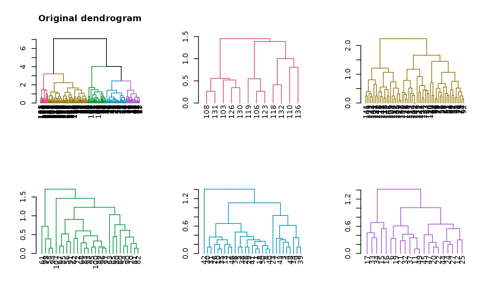
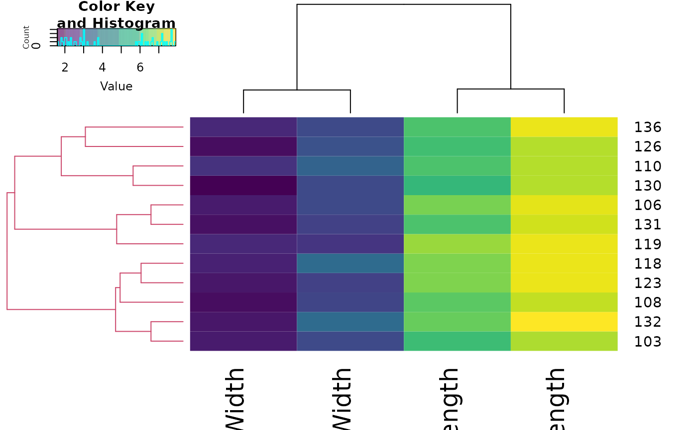

R/get_subdendrograms.R
get_subdendrograms.RdExtracts a list (dendlist) of subdendrogram structures based on the cutree cutree.dendrogram function
from a given dendrogram object. It can be useful in case we're interested in a visual investigation of
specific clustering results.
get_subdendrograms(dend, k, order_clusters_as_data = FALSE, ...)a dendrogram object
the number of subdendrograms that should be extracted
passed to cutree, default is FALSE (while the cutree default is TRUE). The reason is since it's easier to look at the dendrogram plot and then get subtrees that are in the same order is in the plot/dendrogram object. This is in contrast to more traditional use of cutree, where it is used with the original order or rows from the data.
parameters that should be passed to the cutree
cutree.dendrogram
A list of k subdendrograms, based on the cutree
cutree.dendrogram clustering
clusters.
# needed packages:
# install.packages(gplots)
# install.packages(viridis)
# install.packages(devtools)
# devtools::install_github('talgalili/dendextend') #' dendextend from github
# define dendrogram object to play with:
dend <- iris[1:20, -5] %>%
dist() %>%
hclust() %>%
as.dendrogram() %>%
# set("labels_to_character") %>%
color_branches(k = 5)
labels(dend) <- letters[1:20]
plot(dend)

dend_list <- get_subdendrograms(dend, 5)
lapply(dend_list, labels)
#> [[1]]
#> [1] "a" "b"
#>
#> [[2]]
#> [1] "c" "d" "e" "f" "g"
#>
#> [[3]]
#> [1] "h" "i"
#>
#> [[4]]
#> [1] "j" "k" "l" "m"
#>
#> [[5]]
#> [1] "n" "o" "p" "q" "r" "s" "t"
#>
# [[1]]
# [1] "a" "b"
#
# [[2]]
# [1] "c" "d" "e" "f" "g"
#
# [[3]]
# [1] "h" "i"
#
# [[4]]
# [1] "j" "k" "l" "m"
#
# [[5]]
# [1] "n" "o" "p" "q" "r" "s" "t"
# define dendrogram object to play with:
dend <- iris[, -5] %>%
dist() %>%
hclust() %>%
as.dendrogram() %>%
set("labels_to_character") %>%
color_branches(k = 5)
dend_list <- get_subdendrograms(dend, 5)
# Plotting the result
par(mfrow = c(2, 3))
plot(dend, main = "Original dendrogram")
sapply(dend_list, plot)

#> [[1]]
#> NULL
#>
#> [[2]]
#> NULL
#>
#> [[3]]
#> NULL
#>
#> [[4]]
#> NULL
#>
#> [[5]]
#> NULL
#>
# plot a heatmap of only one of the sub dendrograms
par(mfrow = c(1, 1))
library(gplots)
#>
#> Attaching package: ‘gplots’
#> The following object is masked from ‘package:stats’:
#>
#> lowess
sub_dend <- dend_list[[1]] #' get the sub dendrogram
# make sure of the size of the dend
nleaves(sub_dend)
#> [1] 12
length(order.dendrogram(sub_dend))
#> [1] 12
# get the subset of the data
subset_iris <- as.matrix(iris[order.dendrogram(sub_dend), -5])
# update the dendrogram's internal order so to not cause an error in heatmap.2
order.dendrogram(sub_dend) <- as.integer(rank(order.dendrogram(sub_dend)))
heatmap.2(subset_iris, Rowv = sub_dend, trace = "none", col = viridis::viridis(100))
